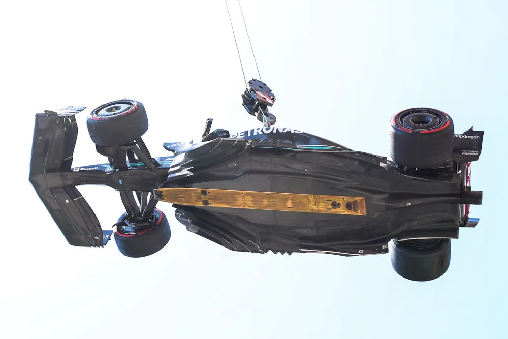

Prancha que fica abaixo dos carros de F1 foi introduzida como medida de segurança após as mortes de Senna e Ratzenberger no GP de San Marino em 1994; regra já desclassificou Schumacher na Bélgica
Já notou que todos os carros de F1 possuem uma placa de madeira na parte de baixo? Foi essa peça, chamada de prancha (no inglês, "plank", "skid block" ou "skid pads") que causou a desclassificação de Lewis Hamilton e Charles Leclerc no GP dos Estados Unidos deste domingo, vencido por Max Verstappen. O dispositivo é milimetricamente controlado pelo Regulamento Técnico da categoria e surgiu após a morte de Ayrton Senna e Roland Ratzenberger no GP de San Marino em 1994.
As placas em geral são feitas de um material chamado "jabroc", que consiste em uma lâmina de madeira revestidas com resinas e que oferecem uma plataforma mais densa, resistente e estável para o uso no automobilismo.
A prancha de madeira passou a ser adotada oficialmente no GP da Alemanha de 1994. Elas evitam que os carros andem com o assoalho excessivamente rente ao chão e, com isso, obtenham benefício aerodinâmico.
A peça também ameniza o impacto do efeito solo, que retornou à categoria com a adoção do novo regulamento técnico em 2022 (cujas regras priorizam o assoalho como gerador de velocidade e carga aerodinâmica, ao invés das asas e aletas). Essa função, por sua vez, se dá por meio da redução dos saltos e solavancos que os veículos podem ter pela proximidade do solo.
As pranchas têm suas dimensões muito bem controladas porque qualquer mínima mudança no tamanho ou peso pode originar ganho aerodinâmico. Elas devem estar instaladas em um local exato do assoalho, de forma simétrica, e evitar que o ar passe entre a peça e o fundo do monoposto.
Logo assim que o dispositivo foi introduzido, fez uma "vítima": Michael Schumacher. O heptacampeão, na época piloto da Benetton, foi desclassificado e perdeu a vitória no GP da Bélgica porque a prancha em seu carro sofreu com desgaste além do limite imposto pela FIA. A Benetton tentou apelar e argumentou que o desgaste ocorreu por uma rodada do alemão, mas o protesto não foi aceito.
O trecho do regulamento citado na punição de Leclerc e Hamilton, o artigo 3.5.9.e do regulamento técnico da F1, sinaliza as medidas exatas para a instalação da prancha; sua posição em relação à parte inferior do carro, bordas e furos. A sanção foi aplicada pela espessura irregular no dispositivo:
"A espessura da montagem da prancha medida normalmente em relação à superfície inferior deve ser de 10mm ± 0.2mm e deve ser uniforme quando nova. Será aceita uma espessura mínima de 9mm devido ao desgaste, e a conformidade com essa disposição será verificada nas bordas dos furos designados".
Nas notas emitidas pelos comissários do GP dos EUA, Mercedes e Ferrari reconheceram que as medições da equipe técnica da Federação Internacional de Automobilismo (FIA) estavam corretas, embora tenham alegado que o desgaste nas pranchas se deu pela "combinação única da pista acidentada e do cronograma da corrida sprint", que reduziu o tempo para checagem dos carros.
A desclassificação ainda prejudicou a luta de Hamilton pelo vice-campeonato da F1: sua desvantagem para Sergio Pérez, que era de 19 pontos após a corrida, aumentou para 39 pontos. Terceiro colocado no campeonato de pilotos, o heptacampeão possui 201 pontos contra 240 do rival da RBR.